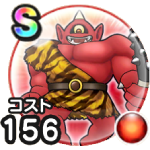

あかおにまる
ほこらこころ最大コスト+4ジバリア属性斬撃・体技ダメージ+12%会心率+4%アトラスのこころS装備時スキルの斬撃・体技ダメージ+5%サイクロプスのこころS装備時すばやさ+30 / 8.0点
くわしい特徴
【ランク特殊効果】 こころ最大コスト+4ジバリア属性斬撃・体技ダメージ+12%会心率+4%アトラスのこころS装備時スキルの斬撃・体技ダメージ+5%サイクロプスのこころS装備時すばやさ+30

ほこらこころ最大コスト+4ジバリア属性斬撃・体技ダメージ+12%会心率+4%アトラスのこころS装備時スキルの斬撃・体技ダメージ+5%サイクロプスのこころS装備時すばやさ+30 / 8.0点
【ランク特殊効果】 こころ最大コスト+4ジバリア属性斬撃・体技ダメージ+12%会心率+4%アトラスのこころS装備時スキルの斬撃・体技ダメージ+5%サイクロプスのこころS装備時すばやさ+30